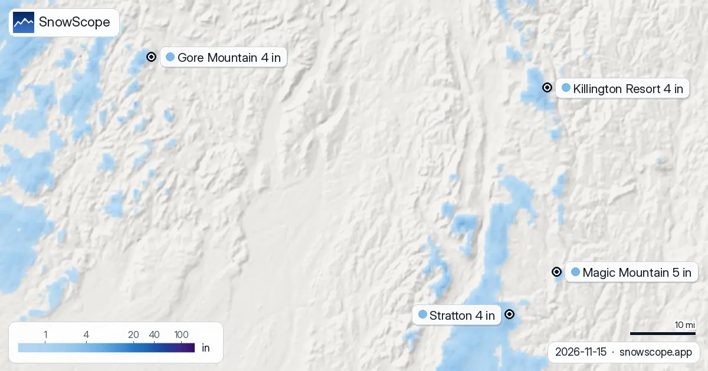

Neve fresca nel Nord-est degli USA a confronto: Bolton Valley Resort in testa con 4 in in 72 ore (15 novembre)
Il terreno bianco è cambiato: 6.880 sq mi (17.820 km²) il 13 novembre, 6.039 sq mi (15.640 km²) oggi e 382 sq mi (990 km²) attesi il 18 novembre. Bolton Valley Resort ha raccolto 4 in (10 cm) di neve fresca nelle ultime 72 ore, 2 in (5 cm) dei quali nelle ultime 24. Così restano circa 3 in (8 cm) sui pendii superiori, secondo il nostro modello neve. Il lavoro sul campo in montagne secche insegna una cosa: la mappa è un inizio, l'ultima parola spetta al pendio.
Le previsioni neve in tempo reale per Bolton Valley Resort nell'app SnowScopeAltezza neve, allerte powder e mappa 3D, gratis.
Dove è caduta la neve nuova
Anche altre località sono andate bene: Mount Snow, Stowe e Stratton hanno avuto 4 in (10 cm), 4 in (10 cm) e 4 in (10 cm) nelle ultime 72 ore.
In tutta la regione oggi 41 località su 111 nel Nord-est degli USA hanno neve in alto, e il nostro modello trova 6.039 sq mi (15.640 km²) di terreno bianco.
| Località | Altezza neve | Neve fresca, 72 h | In arrivo, prossimi giorni | Quota max |
|---|---|---|---|---|
| Bolton Valley Resort | 3 in (8 cm) | 4 in (10 cm) | 0 in (1 cm) | 3.117 ft (950 m) |
| Mount Snow | 3 in (8 cm) | 4 in (10 cm) | 0 in (0 cm) | 3.586 ft (1.093 m) |
| Stowe | 3 in (8 cm) | 4 in (10 cm) | 0 in (1 cm) | 3.648 ft (1.112 m) |
| Stratton | 4 in (10 cm) | 4 in (10 cm) | 0 in (0 cm) | 3.881 ft (1.183 m) |
Alto, medio, basso
Dalla base alla vetta di Bolton Valley Resort: 0 in (1 cm) alla base (1.558 ft / 475 m), 2 in (6 cm) a metà montagna (2.336 ft / 712 m) e 3 in (7 cm) in vetta (3.117 ft / 950 m).
Il 17 novembre lo zero termico a Bolton Valley Resort sale tra 0 ft (0 m) e 9.285 ft (2.830 m), più in alto della cima degli impianti (3.117 ft (950 m)): aspettati pioggia o neve bagnata su ogni pendio.
Cosa aspettarsi
Da oggi al 18 novembre ci aspettiamo 0 in (1 cm) a Bolton Valley Resort e 0 in (1 cm) a Stowe.
Le previsioni a qualche giorno possono cambiare: ricontrolla la mappa il giorno prima di partire.
Cosa hanno visto le stazioni
Il 13 novembre la stazione di Lake Pleasant 2.3 WSW (1.778 ft / 542 m) ha misurato 4 in (9 cm) al suolo, compresi 4 in (9 cm) di neve fresca in 24 ore. Alla stazione di Shrewsbury 0.8 W (1.486 ft / 453 m) lo strumento segnava 3 in (8 cm) di neve al suolo il 13 novembre, di cui 3 in (8 cm) nuovi in 24 ore. Il 13 novembre la stazione di Rome 4.8 SSE (561 ft / 171 m) ha misurato 2 in (5 cm) al suolo, compresi 2 in (5 cm) di neve fresca in 24 ore.
I nostri valori delle località sono stime per i pendii superiori. Quelli delle stazioni sono misure vere, ma solo in un punto e alla data indicata.
Sicurezza e pericolo valanghe
Dopo una nevicata il vento forma accumuli sui pendii sottovento. In fuoripista i primi giorni richiedono più prudenza.
Consigli per sciatori
- La neve fresca ha una scadenza breve: le prime ore. Chi parte presto vince.
- I versanti sud prendono più sole e fondono per primi; i versanti nord in quota tengono la neve più a lungo.
- Prima del fuoripista o dello scialpinismo leggi il bollettino valanghe ufficiale (link qui sotto).
- Neve sulla mappa non significa località aperta: controlla impianti e date di apertura sul sito della località.
- Attiva un avviso powder nell'app SnowScope per sapere quando Bolton Valley Resort riceve neve fresca.
Su questi numeri
Le altezze neve delle località sono la neve più alta sui pendii superiori secondo il modello neve di SnowScope (circa 1 km, calcolo del 15 novembre); sono stime per un'area, non una misura in un punto. I valori delle stazioni sono misure alla data indicata. Le previsioni possono cambiare. Leggi sempre il bollettino valanghe ufficiale prima del fuoripista.
Bollettini valanghe ufficiali: Mount Washington Avalanche Center
Cita questo articolo
Per ricerca, didattica o stampa: numeri e grafici sono liberamente riutilizzabili con licenza CC BY 4.0 citando così.
SnowScope (2026), Neve fresca nel Nord-est degli USA a confronto: Bolton Valley Resort in testa con 4 in in 72 ore (15 novembre), https://snowscope.app/blog/it/2026/11/us-northeast-bolton-valley-resort-fresh-snow-powder-alert-15-november-2026.html, consultato il 2026-11-15
SnowScope (Atlas Labs). (2026, November 15). Neve fresca nel Nord-est degli USA a confronto: Bolton Valley Resort in testa con 4 in in 72 ore (15 novembre). SnowScope snow reports. https://snowscope.app/blog/it/2026/11/us-northeast-bolton-valley-resort-fresh-snow-powder-alert-15-november-2026.html
BibTeX
@misc{snowscope2026usnortheastboltonvalleyr,
author = {{SnowScope (Atlas Labs)}},
title = {Neve fresca nel Nord-est degli USA a confronto: Bolton Valley Resort in testa con 4 in in 72 ore (15 novembre)},
year = {2026},
month = nov,
howpublished = {\url{https://snowscope.app/blog/it/2026/11/us-northeast-bolton-valley-resort-fresh-snow-powder-alert-15-november-2026.html}},
note = {Published 2026-11-15 20:24 UTC; accessed 2026-11-15}
}· CC BY 4.0 · Metodi, dati e strumenti →
Bolton Valley Resort: neve e temperatura per quota, quest'inverno vs lo scorso (strumenti) →
Segui Bolton Valley Resort
Gratis: un messaggio quando arriva la neve e il meteo ogni mattina.
Altri bollettini neve

Dove nevicherà nel Nord-est degli USA tra il 13 novembre e il 26 novembre, e quanto? Abbiamo interrogato i due modelli globali che arrivano a due …

2 su 4: tante sono oggi le località nel Nord-est degli USA nettamente sopra la norma. Com'è questo inverno finora? Abbiamo messo la neve di oggi in 4 …

È un buon inizio d'inverno nel Nord-est degli USA? La neve di oggi in 4 località nel Nord-est degli USA, confrontata con la stessa data in ciascuno …